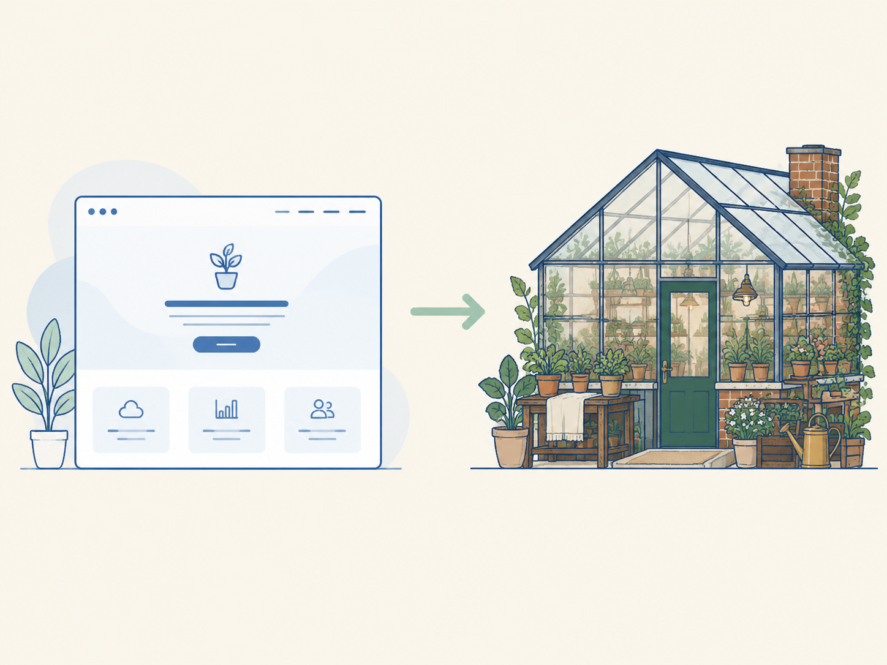

你可能也做過這件事。打開 Codex，打一句「幫我做一個植物店的 landing page」，送出，然後等它跑完。
幾分鐘後畫面上出現一個頁面。不醜，排版也整齊，但你心裡浮起一種說不上來的熟悉感：置中的大標、柔和的漸層、三張圓角卡片、幾句聽起來很宏亮卻沒講清楚什麼的文案。你把它貼給朋友看，朋友回一句「這 AI 做的吧」。
這一節要回答的就是這個現象。為什麼只給一句話，產出就長得這麼像「AI 生的」？答案不是模型偷懶，也不是它能力不夠，而是它在沒有收到任何視覺方向的時候，只能退回自己最熟悉的那一套。搞懂這個機制，你才知道後面該把力氣花在哪個地方，而不是一直加字數、加需求、重跑一百次。
先講清楚我們在說什麼。「AI 味」不是指某個特定的配色或字體，它是一種「每個人都拿得到、也因此每個人都一樣」的產出。
它通常有幾個特徵：版面安全、對比溫和、文案空泛、裝飾很多但資訊很少。單看好像都沒問題，放在一起就透露出一件事：這個頁面沒有人在後面做決定。
要理解它從哪來，把模型想成一位接到案子的室內設計師。
如果你只跟設計師說「幫我弄一個舒服的家」，他不會知道你是喜歡北歐的淺木頭，還是喜歡台南老屋的磨石子地。完全沒有偏好的話，他只好端出「樣品屋」：乾淨、耐看、誰來住都不會出錯，但也誰都認不出這是你的家。
樣品屋不是壞設計，它是「沒有方向時最安全的設計」。模型產出的預設頁面，就是網頁界的樣品屋。
這裡有個反直覺的地方值得記住：預設是「一個」預設，不是「每個人各自不同的預設」。模型背後的訓練資料雖然五花八門，但它收斂出來的安全答案就那麼一套。每一個人都叫它「用預設發揮」，大家拿到的就是同一套答案。
所以網站長得像，不是巧合，是結構性的結果。你和其他所有人，剛好都站在同一個原點上。
要離開那個原點，你需要給的是一份視覺方向。
視覺方向回答的不是「頁面上要放什麼功能」，而是「這個東西看起來、摸起來、感覺起來像什麼」。它通常由幾個元素組成：
拿植物店的例子來說，光是補上一句「像一間有溫室的獨立小店，真誠、有點老派，不是那種通用的生活風格品牌，也不是現代儀表板」，模型的方向感就完全不同了。它會往磚、木、玻璃這些材料去想，而不是往「乾淨現代的 SaaS 官網」去想。

差別不在你多寫了幾個字，而在你把它從預設拉開，給了一個具體的落點。同樣是字數，一種字數是堆需求，另一種字數是在移動原點。
很多人卡住的地方在這裡：以為視覺方向要寫得像設計規格書。
其實不用。你不需要指定精確的十六進位色碼，也不用交代每個區塊的間距。只要有一個能想像出來的畫面就夠了。甚至可以是用講的、講得斷斷續續、夾雜一堆「呃」也沒關係，模型足以理解你的意圖。
真正重要的是「有沒有方向」，不是「方向講得多漂亮」。
視覺方向是 brief（你交給 Codex 的那份說明）裡一個獨立的區塊，和「要放什麼內容」、「要多好的品質」是不同層次的事。
| 層次 | 回答的問題 | 缺了會怎樣 |
|---|---|---|
| 內容 | 頁面要講什麼 | 有方向沒內容，會變成漂亮的空殼 |
| 視覺方向 | 看起來、感覺起來像什麼 | 有內容沒方向，會退回樣品屋 |
| 品質標準 | 做到什麼水準（響應式、無障礙、精緻） | 有方向有內容，還是做得潦草 |
三者缺一，作品就會歪向某一邊。先記住這個分工就好。
只給一句話，模型就退回預設；預設只有一套，所以每個人的產出都長得一樣，這就是「AI 味」。要離開這個原點，brief 裡必須有一份視覺方向：氛圍、材質、配色、字體，講得粗沒關係，重點是有沒有。而視覺方向和「內容」、「品質標準」是 brief 裡三個不同層次的東西。
這三層是 brief 的骨架，接下來要處理的是另一個問題：就算你給了方向，文案與介面細節還是可能冒出「AI 味」。下一節會介紹兩個專門擋這種味道的 skill。